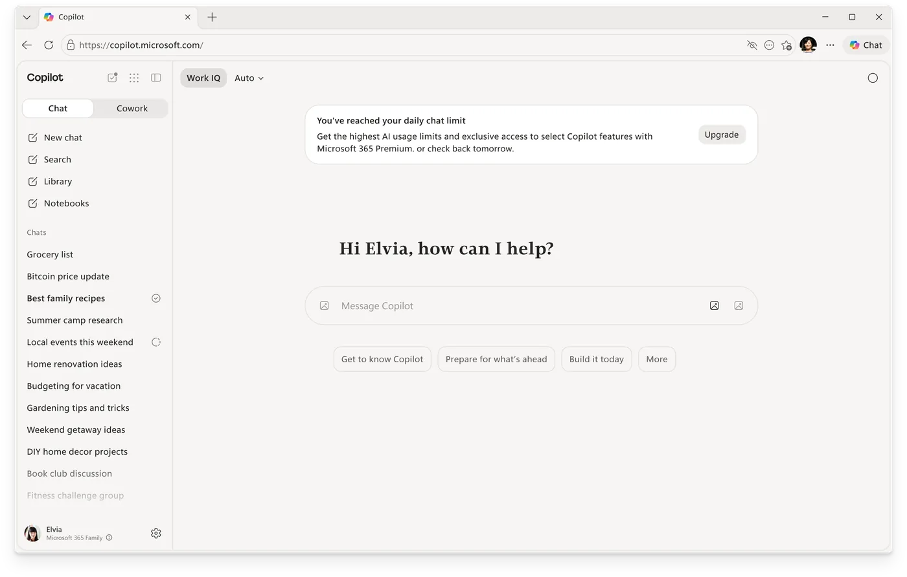
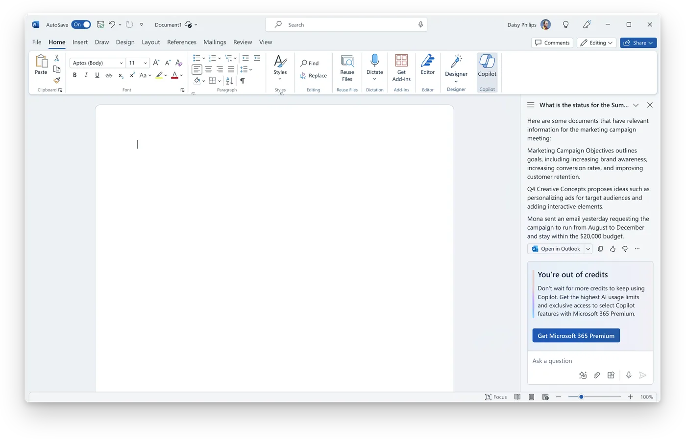
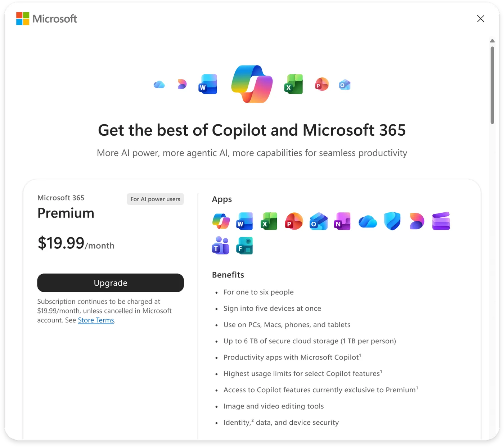
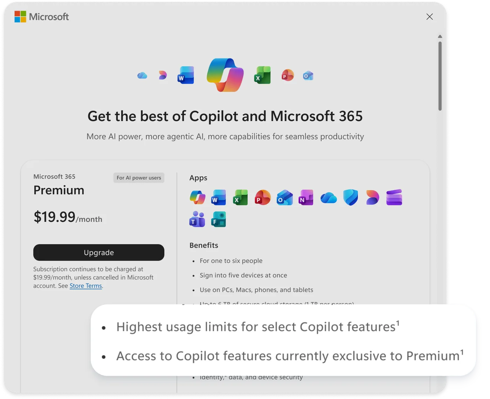
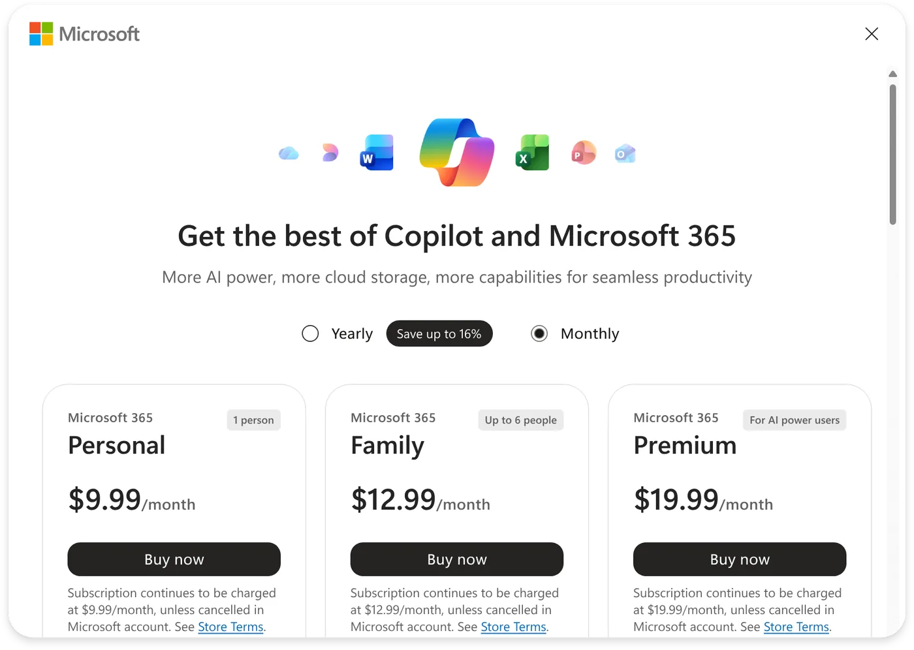
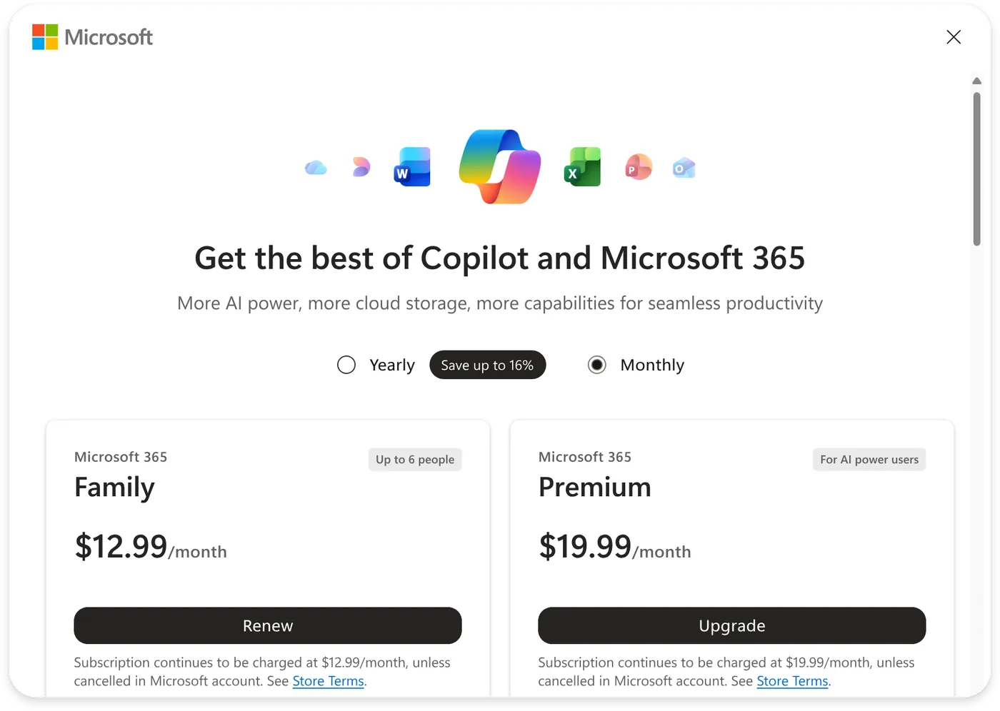
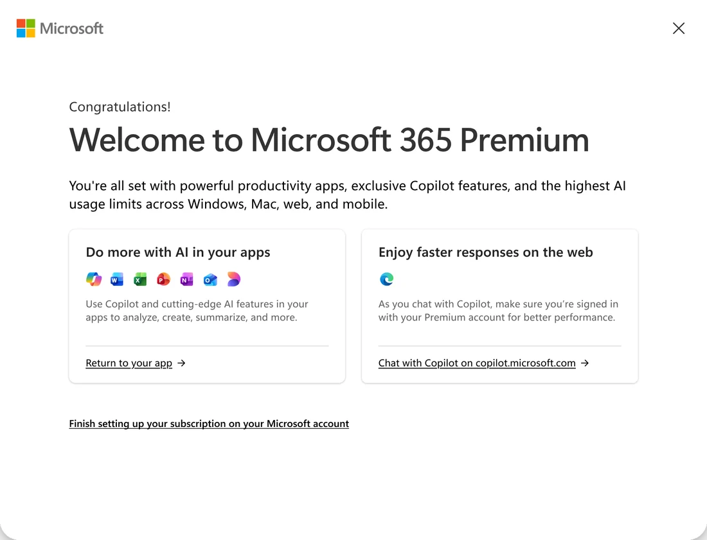

Overview
Microsoft was introducing Microsoft 365 Premium, a new AI-focused subscription. Launching it was never about one screen. It meant fresh positioning, new upgrade paths, new pricing relationships, and new decisions for people to make along the way.
The challenge
This was not a checkout project. The real problem was strategic:
“How do we introduce a completely new product into an ecosystem where users already have established mental models?”
My role
- Journey mapping across entry points and audiences.
- Flow design for discovery, upgrade, and post-purchase.
- Stakeholder alignment across product, pricing, and engineering.
- Upgrade strategy and user communication of differentiation.
Key design decisions
1 · How should users discover Premium?
I designed upgrade moments that showed up across Microsoft 365 right when people hit a real limit, like a Copilot usage cap or running low on storage. Premium felt like the obvious next step instead of a separate product you had to go hunt for.


2 · How should we explain differentiation?
I led with outcomes over features, focusing on what Premium let you do that your current plan couldn't. Framing the value around AI capabilities, usage limits, storage, and priority access made the upgrade decision easy to understand.


3 · How should upgrades work?
I cleaned up the upgrade paths across the M365 plan-comparison modal and account surfaces, so people could move between plans easily and know exactly what they were getting. That meant handling subscription migrations, remaining-balance conversions, and the other edge cases existing subscribers run into.


4 · What happens post-purchase?
I designed onboarding that connected people to what they'd just paid for. Guided activation flows pointed out the key Premium benefits and got people using Copilot, storage, and productivity features early, so the value showed up fast.

Navigating ambiguity
Premium's positioning, upgrade paths, and promotions kept shifting while I worked. So I built a flexible framework teams could keep building on without the customer journey falling apart. This was the most senior part of the job: holding a steady direction while the details were still moving.
Impact
More than any single launch number, the work gave the team a coherent end-to-end experience at ship, plus a set of upgrade patterns the next offers could reuse.